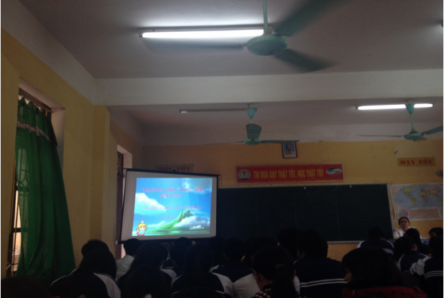
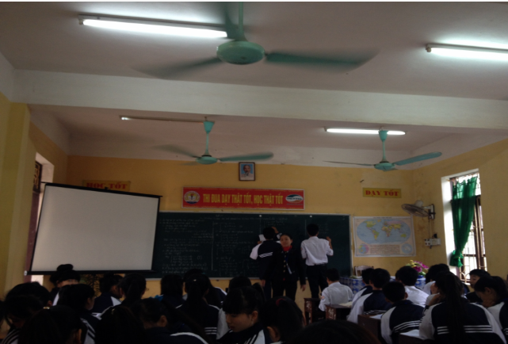
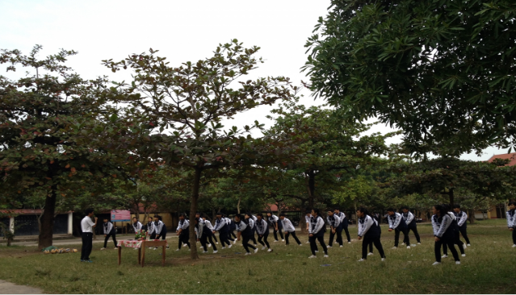

Thi giáo viên giỏi cấp trường
Căn cứ kế hoạch số 141/KH - THPTADT ngày 16/9/2014 về việc thực hiện nhiệm vụ giáo dục năm học 2014 - 2015 của trường THPT A Duy Tiên;
Căn cứ Điều lệ Hội thi giáo viên giỏi ban hành kèm theo Thông tư: 21/2010/TT-BGDĐT ngày 27/7/2010 của Bộ GD&ĐT;
Trường THPT A Duy Tiên đã tổ chức thi giáo viên giỏi cấp trường lần 1 năm học 2014- 2015.
Thông qua cuộc thi nhằm khuyến khích, động viên giáo viên tự học và sáng tạo, nâng cao nghiệp vụ sư phạm. Tạo cơ hội để giáo viên thể hiện năng lực bản thân, học tập và trao đổi kinh nghiệm về giảng dạy; tổ chức lớp học; khai thác sử dụng sáng tạo, hiệu quả phương tiện, đồ dùng dạy học;
Hội thi đã diễn ra trong 3 ngày, với ngày thứ nhất các giáo viên thi năng lực; ngày thứ hai và thứ ba (17/11- 18/11) giáo viên thi giảng.
Sau đây là một số hình ảnh

